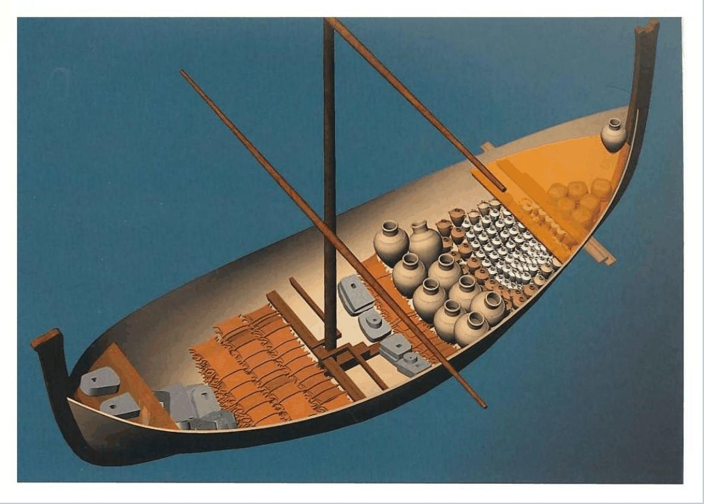
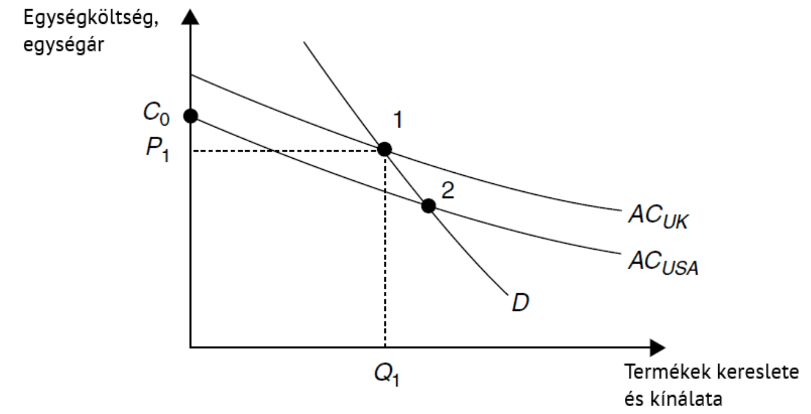
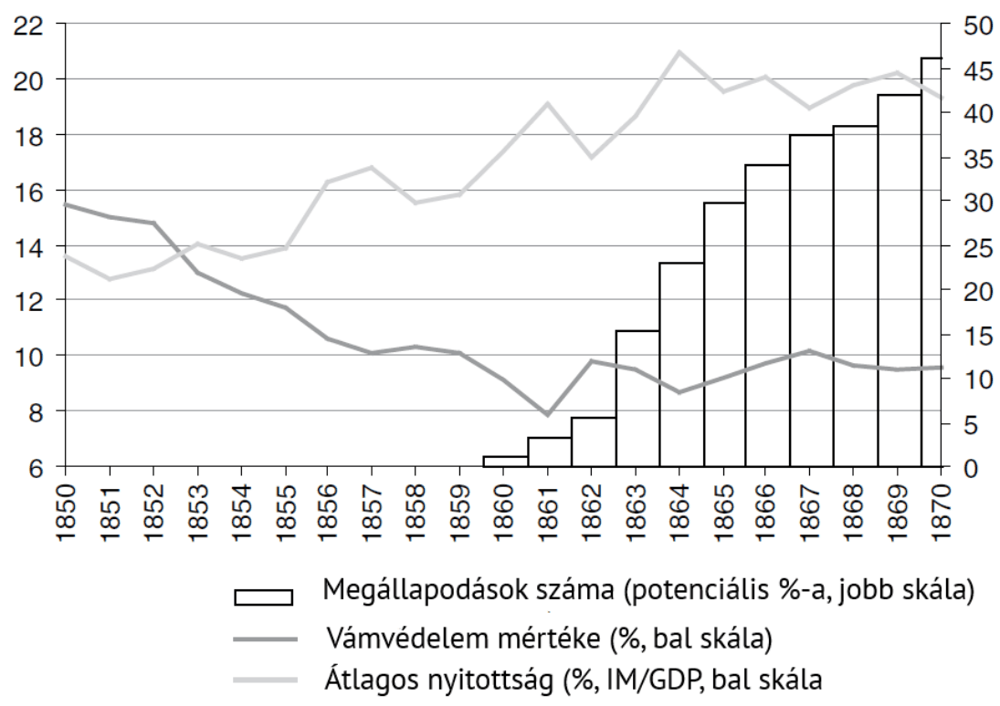

11. fejezet · diák: 176–185
A nemzetközi gazdasági rend: kereskedelempolitika
Az 5. fejezetben láttuk, hogy a felzárkózás egyik feltétele az olyan nemzetközi rend, amelyben áramolhat az áru és a tudás. Ez a fejezet és a következő arról szól, hogyan épült fel ez a rend – és hogyan omlott össze a 20. század első felében.
Nyitó eset: egy 3500 éves hajóroncs 176–177. dia
Kb. 3500 éve süllyedt el Törökország partjainál az a hajó, amelyet Uluburun mellett találtak meg. A rakományban afganisztáni ónt, ciprusi rezet, egyiptomi drágaköveket és aranyat, mezopotámiai üveget és föníciai gyantát találtak. Ebből tudjuk, hogy a nemzetközi kereskedelem már a késő bronzkorban elterjedt volt a mai Görögország és Irán közötti hatalmas régióban.
Ezt az időszakot gyakran az első globalizáció korszakának nevezik. Nem magától alakult ki: jelentős erőfeszítések segítették. Az Egyiptomban talált Amarna-levelekből tudjuk, hogy a kor nagy birodalmainak vezetői rendszeres kapcsolatban álltak egymással, egymás között házasodtak, ajándékokat küldtek, és egymást testvérként szólították. Ezek az első bizonyítékaink arra, hogy a diplomácia hogyan járulhat hozzá a gazdasági pezsgéshez.
A nemzetközi tárgyalások írásmódja a sumer ékíráson alapult; az ebből kifejlődő akkád–arámi nyelv több mint ezer évig szolgált az egész régió közvetítőnyelveként – ahogy Európában a latin, ma a világon az angol.

A fejezet kérdése: mitől függ, hogy az országok között szabadon áramlik-e az áru – és miért fordult a világ időnként a szabadkereskedelem, máskor a vámok felé?
Útiterv
✏️ Gondold végig – Az első globalizáció
- Mit mutat az uluburuni roncs és az Amarna-levelek együtt?
Mintaválasz
A roncs rakománya azt, hogy a késő bronzkorban kiterjedt, sok régiót összekötő kereskedelem volt. A levelek azt, hogy ez nem spontán alakult ki: a birodalmak diplomáciai kapcsolatai, a közös közvetítőnyelv és az uralkodók közötti bizalom csökkentették a kereskedelem költségét – vagyis már ekkor volt „nemzetközi rend”.
Nemzetközi intézmények, kereskedelempolitika, növendékipar-védelem 178–180. dia
Az országok közötti gazdasági kapcsolatok tranzakciós költségei államok közötti megállapodásokkal jelentősen csökkenthetők. Ha ilyen megállapodások létrejönnek, ezek alkotják a nemzetközi gazdasági rend alapját; hiányukban a nemzetközi kapcsolatok (csere és tőkebefektetés) mértéke alacsony.
A nemzetközi gazdasági rend két legfontosabb eleme:
- a kereskedelempolitikai rend (ez a fejezet);
- a monetáris rend (12. fejezet).
Ez a nemzetközi szintű megfelelője annak, amit a 4. fejezetben az intézményekről tanultunk: ahogy egy országon belül a szabályok csökkentik a csere költségét, úgy az országok között a megállapodások.
Mire valók a vámok?
A kereskedelempolitika fő eszközei a vámok és egyéb kereskedelmi akadályok. Két céljuk lehet:
- Bevételi forrás: az 1860–70-es évekig az állami bevételek 10–50%-át adták; az USA-ban ez a 20. századig így maradt.
- Iparpolitikai eszköz: a növendékiparok védelme.
Növendékipar: frissen létrehozott iparág, amelynek még nincsenek meg a piaci ismeretei és kapacitásai ahhoz, hogy méretgazdaságosságban felvegye a versenyt a piacon régóta jelen lévő szereplőkkel.
A gondolat Alexander Hamilton (1790) és Friedrich List (1841) nevéhez fűződik; az 1950–60-as évektől a függetlenné váló volt gyarmatok és Latin-Amerika is alkalmazta.
Hogyan működik az érv? Nézzük az ábrát! A vízszintes tengelyen a termék kereslete és kínálata, a függőlegesen az egységköltség és az egységár van.

Hogyan olvasd az ábrát?
- Mindkét ország átlagköltsége csökken a termelt mennyiséggel (méretgazdaságosság).
- A brit ipar már régóta termel: a piacon az 1-es pontban van, P1 áron, Q1 mennyiséggel.
- Az amerikai költséggörbe alacsonyabb a britnél – ha az amerikai ipar nagy lenne, olcsóbban termelne (2-es pont).
- De kicsiben indulva az amerikai cég induló költsége (C0) magasabb, mint a brit ár (P1): szabad versenyben el sem tud indulni, mert veszteséges lenne.
- Ha egy vám ideiglenesen megemeli a brit termék árát C0 fölé, az amerikai ipar elindulhat, felnőhet, és végül a 2-es pontba jut – ahol már olcsóbb a britnél, és nem kell védelem.
ideiglenes vám → az új iparág elindulhat → nő a termelés → csökken az átlagköltség → versenyképes lesz → a vám lebontható
A növendékipar-érv vitatott (Kiegészítés): a védelem csak akkor jó, ha ideiglenes, és az iparág tényleg versenyképessé válik. Ha a védett ipar sosem „nő fel”, a vám tartós járadékká válik – ez a 4. fejezet szerint egy demokráciában is fennmaradó kizsákmányoló intézmény. Ha-Joon Chang szerint viszont szinte minden mai gazdag ország (az USA, Németország, Japán, Dél-Korea) vámvédelem mögött iparosodott.
✏️ Gondold végig – Növendékipar
- Miért nem tud egy hatékonyabb, de új iparág szabad versenyben elindulni?
Mintaválasz
Mert kicsiben indul, és a méretgazdaságosság miatt kezdetben magas az átlagköltsége (C0), magasabb, mint a régi, nagy versenytárs ára (P1). Hiába lenne nagy méretben olcsóbb, a kezdeti veszteség miatt el sem jut odáig.
- Mikor válik károssá a növendékipar-védelem?
Mintaválasz
Ha nem ideiglenes: ha a védett iparág nem válik versenyképessé, vagy ha a vám lebontását a kedvezményezettek politikai úton megakadályozzák. Ilyenkor a vám a fogyasztók rovására tartós járadékot biztosít egy szűk csoportnak.
A vámok leépítése 1.: kétoldalú megállapodások 181–182. dia
Cobden–Chevalier-szerződés (1860): a franciák és az angolok kötötték meg, és sok más ország követte a példájukat. Ennek kulcsa a legnagyobb kedvezmény elve (most-favoured-nation, MFN):
ha A és B a legnagyobb kedvezmény elvében állapodik meg, akkor bármilyen kereskedelmi könnyítés, amelyet A egy harmadik országnak ad, automatikusan B-re is vonatkozik.
Egy kis példa (Kiegészítés): Franciaország és Nagy-Britannia MFN-szerződést köt. Később Franciaország megállapodik Belgiummal, hogy a belga acél vámját 10%-ról 5%-ra csökkenti. Az MFN miatt ez a kedvezmény automatikusan a brit acélra is vonatkozik. Így minden kétoldalú vámcsökkentés az egész szerződéses hálózaton végigfut.
kétoldalú MFN-szerződések hálózata → minden kedvezmény kiterjed a többi partnerre → nem lehet egymás ellen megkülönböztetni → a vámok fokozatosan csökkennek
Az ábra mutatja, milyen gyorsan terjedt el a rendszer: 1860 után a megállapodások száma meredeken nőtt, az átlagos vámvédelem csökkent, a nyitottság (az import a GDP arányában) pedig nőtt.

- Az 1880-as években kisebb visszarendeződés történt, de a vámbevételek aránya az állami bevételeken belül Európában 10% alatt maradt.
- Az USA ekkor is vámokkal védekezett: iparpolitikai elvből és bevételszerzésből.
- Németországban a „rozs és acél szövetsége” – a mezőgazdaságot (junkerek) és az ipart egyszerre védő vámok – vezetett protekcionizmushoz.
A legnagyobb kedvezmény elve nem azt jelenti, hogy egy ország kiemelt kedvezményt kap a többiekkel szemben – éppen fordítva: senki sem kaphat jobb elbánást, mint az MFN-partner, tehát megszűnik a megkülönböztetés. (Mintazh 11.)
✏️ Gondold végig – A legnagyobb kedvezmény elve
- Miért gyorsította fel a legnagyobb kedvezmény elve a vámok leépítését?
Mintaválasz
Mert minden kétoldalú kedvezmény automatikusan kiterjedt a többi MFN-partnerre is. Így egyetlen megállapodás az egész szerződéses hálózaton végigfutott, és a megkülönböztetés megszűnt.
- Mit mutat a német „rozs és acél szövetsége”?
Mintaválasz
Hogy két érdekcsoport – az agrárius nagybirtokosok és a nehézipar – összefogva politikai úton vámvédelmet harcolt ki, a fogyasztók rovására. Ez a járadékvadászat és az AJR-modell logikája (4. fejezet).
A vámok visszaépítése a nagy világválságban 183. dia
A nagy világválság lefolyása (1929 → 1930-as évek):
- A válság miatt csökken az USA importkereslete.
- A többi ország importja is csökken, mert visszaesnek az exportbevételeik.
- Ez visszaveti az árakat – főleg az élelmiszerekét és a nyersanyagokét –, és tovább csökkennek az exportbevételek.
USA-válság → kevesebb import → mások exportbevétele esik → ők is kevesebbet importálnak → árzuhanás → még kisebb bevétel
A legnagyobb vesztesek ezért az agrár- és nyersanyagexportőrök voltak – köztük Magyarország is. Nem volt elég aranytartalékuk, és nem tudták finanszírozni a fizetési mérlegük hiányát. Két megoldás kínálkozott: vámok bevezetése vagy valutaleértékelés.
- 1930: a Smoot–Hawley-törvény erősen növelte a protekcionizmust az USA-ban.
- 1931: Nagy-Britannia elhagyta az aranystandard rendszert (12. fejezet).
- Kereskedelmi blokkok jöttek létre: a Brit Nemzetközösség, a német ASKI-márka-zóna.
- A kereskedelem volumene drasztikusan csökkent: 1933-ra a nemzetközi kereskedelem az 1929-es szint harmadára esett; a kereskedelem és a kibocsátás aránya világszinten csak az 1960-as években érte el újra az 1913-as szintet.
A vámháború a „koldusbotra a szomszédot” (beggar-thy-neighbour) politika példája: minden ország a saját termelőit akarta védeni a többiek kárára, de mivel mindenki ezt tette, mindenki veszített. Az ASKI-márka (Ausländer-Sonderkonten für Inlandszahlungen) olyan elszámolási pénz volt, amelyet csak német áruk vásárlására lehetett felhasználni – Magyarország is ebbe a zónába sodródott.
✏️ Gondold végig – A vámháború
- Miért voltak a nagy válság legnagyobb vesztesei az agrár- és nyersanyagexportőrök?
Mintaválasz
Mert a válságban az élelmiszerek és a nyersanyagok ára esett a legjobban, így az exportbevételük zuhant. Aranytartalékuk nem volt elég, hogy a fizetési mérleg hiányát finanszírozzák, ezért vámokhoz vagy leértékeléshez folyamodtak, ami tovább rontotta a helyzetet.
- Miért lett mindenki vesztes, amikor minden ország vámokkal védekezett?
Mintaválasz
Mert egy ország vámja a másik ország exportját csökkenti; ha mindenki emeli a vámjait, mindenki exportja zuhan, a kereskedelem a harmadára esik, és elvész a szakosodás haszna (2. fejezet). Az egyéni védekezés kollektív kárt okozott.
A vámok leépítése 2.: többoldalú megállapodások 184–185. dia
GATT (1947) – Általános Vámtarifa- és Kereskedelmi Egyezmény: többoldalú megállapodás, amelynek keretében a tagországok egymást követő tárgyalási fordulókban csökkentették a vámokat.
| Forduló | Kezdőév | Tagok száma |
|---|---|---|
| Genf | 1947 | 23 |
| Annecy | 1949 | 34 |
| Torquay | 1950 | 34 |
| Genf II | 1956 | 22 |
| Dillon | 1960 | 45 |
| Kennedy | 1964 | 48 |
| Tokió | 1973 | 102 |
| Uruguay | 1986 | 123 |
| Doha (folyamatban) | 2001 | 159 |
1986 és 2007 között a vámok a világban átlagosan 26%-ról 8,8%-ra csökkentek.
Az uruguayi forduló eredményeként 1995-ben megalakult a Kereskedelmi Világszervezet (WTO), amely a GATT-ot állandó szervezetté tette, vitarendezési eljárással. A GATT is a legnagyobb kedvezmény elvére épült – csak már nem kétoldalú szerződések hálózataként, hanem egyetlen közös megállapodásként.
Az eddigi kereskedelempolitikai rendszerek
| 1850 előtt | 1850–1913 | 1920–39 | 1945 után | |
|---|---|---|---|---|
| A kereskedelem természete | nem versengő javak | iparágak közötti | átmenet | iparágon belüli |
| Kereskedelempolitika | merkantilista | a szabadkereskedelem erősödik | a protekcionizmus visszatérése | a szabadkereskedelem felé (a mezőgazdaság kivételével) |
| A kereskedelem bővülése | lassú | magas | stagnál, csökken | magas |
| Kereskedelem/jövedelem arány | alacsony | magas | alacsony | magas |
Mit jelentenek a kereskedelem fajtái? Nem versengő javak: olyan áruk, amelyeket a vevő otthon egyáltalán nem tud előállítani (fűszer, selyem, tea). Iparágak közötti: az egyik ország gépet ad, a másik gabonát (Ricardo komparatív előnye). Iparágon belüli: Németország autót exportál Franciaországba, és autót importál onnan – a változatosság és a méretgazdaságosság miatt.
✏️ Gondold végig – GATT és a rendszerek
- Miben különbözött a GATT a 19. századi kétoldalú szerződésektől?
Mintaválasz
A GATT többoldalú volt: egyetlen közös megállapodás, egyre több taggal és rendszeres tárgyalási fordulókkal, nem kétoldalú szerződések laza hálózata. Így stabilabb és nehezebben visszafordítható volt, ami a vámok tartós csökkenéséhez vezetett.
- Mi a közös 1850–1913-ban és 1945 után, és miben más a két világháború közötti időszak?
Mintaválasz
Mindkét időszakban a szabadkereskedelem erősödött, a kereskedelem gyorsan bővült, és magas volt a kereskedelem/jövedelem arány. 1920–39-ben a protekcionizmus visszatért, a kereskedelem stagnált és csökkent. Ez egybeesik a konvergencia és a divergencia korszakaival (5. fejezet).
Összefoglalás
- Az államok közötti megállapodások csökkentik a nemzetközi kapcsolatok tranzakciós költségeit; ezek alkotják a nemzetközi gazdasági rendet (kereskedelempolitikai és monetáris rend). Már a bronzkorban a diplomácia segítette a kereskedelmet.
- A vámok bevételi forrásként és iparpolitikai eszközként (növendékipar-védelem) is szolgáltak.
- A legnagyobb kedvezmény elve (1860) kétoldalú szerződésekkel leépítette a vámokat és a megkülönböztetést.
- A nagy világválság vámháborút, blokkokat és a kereskedelem összeomlását hozta.
- 1945 után a GATT többoldalú fordulói tartósan csökkentették a vámokat; a kereskedelem iparágon belülivé vált.
Válasz a fejezet kérdésére: az áru szabad áramlása nemzetközi megállapodásokon – rendszabályokon – múlik, amelyek csökkentik a tranzakciós költségeket. A világ a szabadkereskedelem felé fordult, amikor ilyen rend működött (MFN-szerződések, GATT), és a vámok felé, amikor egy válság miatt minden ország a saját termelőit védte – vagy amikor erős érdekcsoportok (rozs és acél) és fejlesztési célok (növendékipar) indokolták.
Esszéhez: ha ezt látod → ezt használd
| Ha az esetben ez áll… | …akkor ezt a fogalmat / mechanizmust használd |
|---|---|
| Egy felzárkózó ország vámmal védi az új iparágait | növendékipar-védelem (Hamilton, List) (→) |
| Kereskedelmi szerződések, diplomácia | nemzetközi intézmények mint tranzakciósköltség-csökkentők (→) |
| Egyenlő elbánás minden partnernek | legnagyobb kedvezmény elve (→) |
| Érdekcsoportok vámvédelmet harcolnak ki | rozs és acél szövetsége; járadékvadászat (→) |
| Válság, exportbevétel-zuhanás, vámháború | a vámok visszaépítése, kereskedelmi blokkok (→) |
| Nyersanyag- vagy agrárexportőr ország válságban | a legnagyobb vesztesek (→) |
| Többoldalú kereskedelmi rendszer, WTO-tagság | GATT-fordulók, vámcsökkentés (→) |
Kapcsolódások
- Világrend, hegemónia (Keohane) (1. fejezet).
- A kereskedelem haszna, a politikai-kulturális távolság költsége (2. fejezet).
- Protekcionizmus mint kizsákmányoló intézmény demokráciában (4. fejezet).
- A transzfer feltétele a nyitott nemzetközi rend; konvergencia és divergencia (5. fejezet).
- A nagy világválság (7. fejezet); aranystandard, trilemma (12. fejezet).
- A nyitottság veszteseinek kompenzálása: Ruggie–Rodrik (14. fejezet).
- Szintézis (15. fejezet): a nemzetközi környezet mint magyarázó tényező a Korea-esszében.